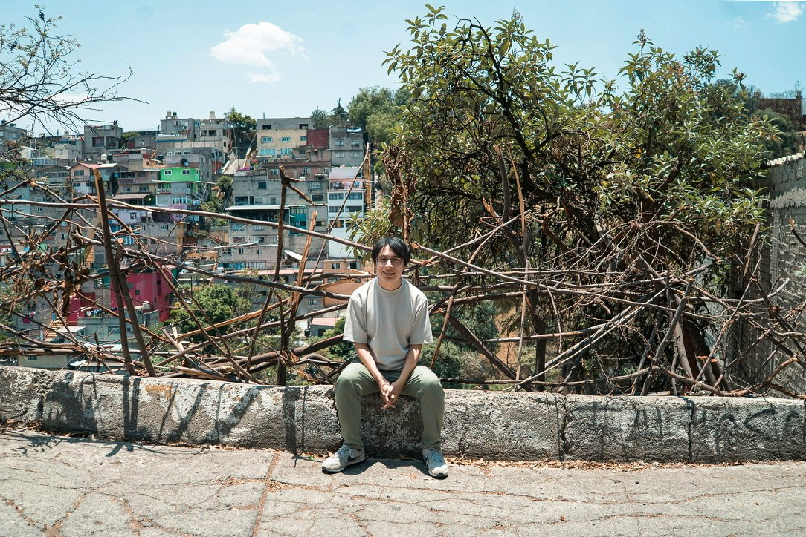
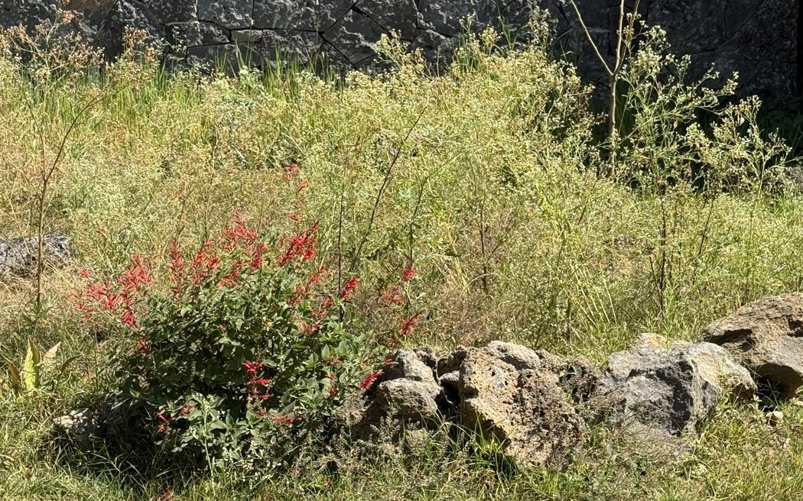
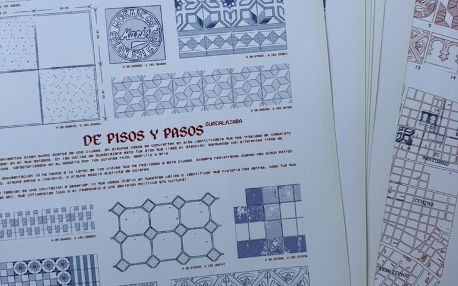
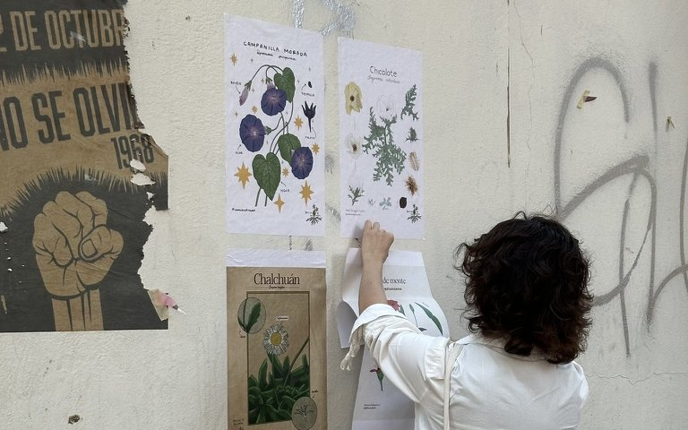

19.369990° N, 99.225685° O — Ciudad de México
Arquitecto paisajista y cronista visual de la Ciudad de México. Diseño paisajes y fotografío lo que casi nadie mira.
Ver el mapa de proyectos ↓Soy arquitecto paisajista formado en la UNAM. Las coordenadas de esta página marcan un punto en una de las barrancas del poniente de la Ciudad de México, donde nací y crecí. Ver ese paisaje todos los días me enseñó a leer el territorio desde otro lugar.
Buena parte de mi trabajo ha sido en la escala urbana. Durante siete años dirigí el área de proyectos de Soluciones Ambientales Yaax, y desde 2025 trabajo de forma independiente con mi propio estudio de paisaje.
Con la fotografía y el diseño gráfico he documentado las ciudades que recorro, fijándome en lo que pasa desapercibido: los pisos, las grietas, las plantas que crecen solas y las huellas que dejan autores anónimos. Más que documentar, me interesa interpretar esos elementos dentro de su contexto histórico, político y cultural. Desde esa mirada he empezado a experimentar en la calle con la vegetación, el arte urbano y los materiales.
Este sitio reúne ese recorrido, que sigue en movimiento, y muestra cómo cada proyecto se conecta con los demás.

Jardines y espacios urbanos que parten de entender el sitio: su suelo, su agua y lo que ya crece ahí. En cada proyecto procuro usar especies nativas, restaurar el suelo y manejar el agua de lluvia.

Mapas, síntesis gráficas y registros visuales de la vida urbana, donde lo anónimo y lo cotidiano se vuelven materia de interpretación. Una forma de ver la ciudad a través de mis ojos.

El proyecto que cofundé con el biólogo Arath Macías para que la gente reconozca y nombre las plantas que crecen solas en las banquetas. Aquí cuento mi parte como creador y coordinador creativo.

Textos propios, entrevistas y notas sobre plantas, paisaje y vida urbana. Cada entrada lleva directo a la publicación original.
Ningún proyecto de este mapa lo hice solo. Estas son las personas que me acompañan de forma constante.
Dibuja y desarrolla conmigo los proyectos de paisaje: lleva las ideas de diseño a planos, fichas técnicas, mapas e ilustraciones.
Acompaña la selección de especies y la investigación botánica de los proyectos. Cofundamos juntos Nativas de las Calles.
Escríbeme si te interesa trabajar juntos, invitarme a una charla o saber más de alguno de estos proyectos.